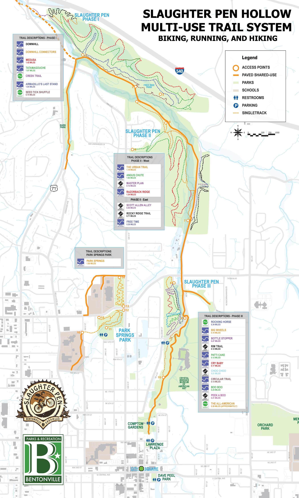
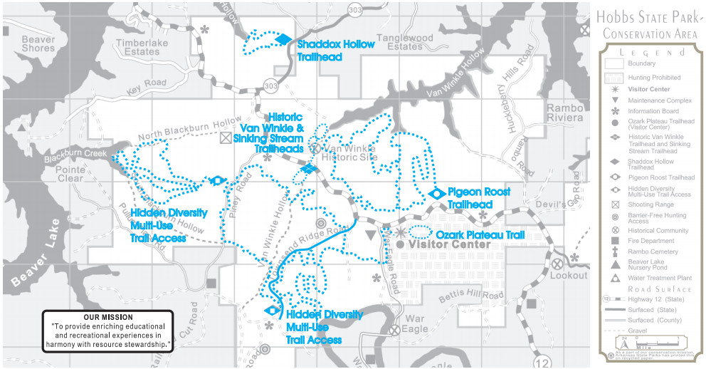
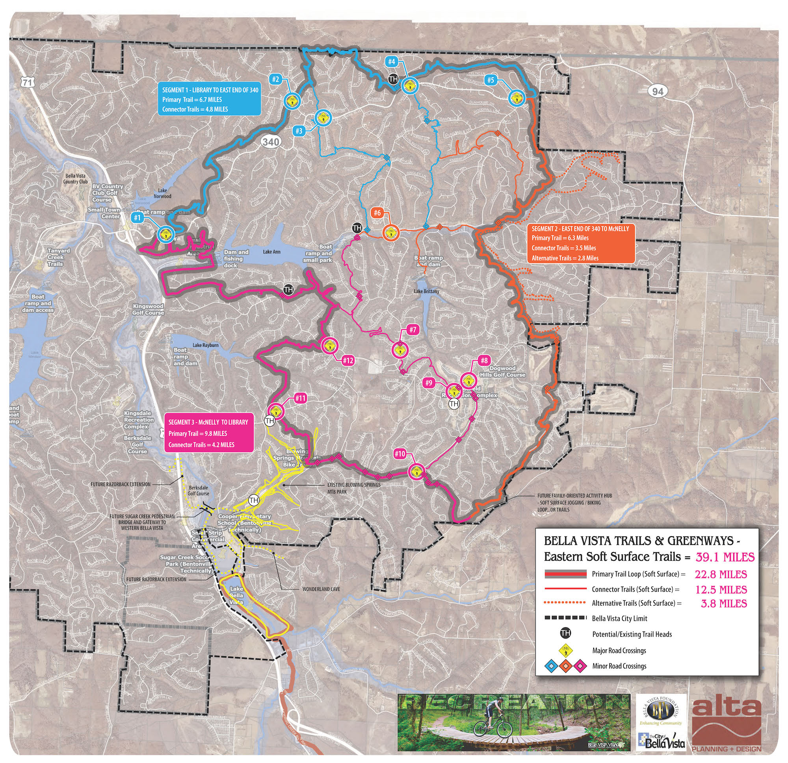
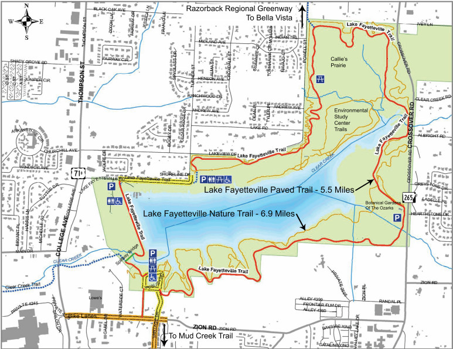
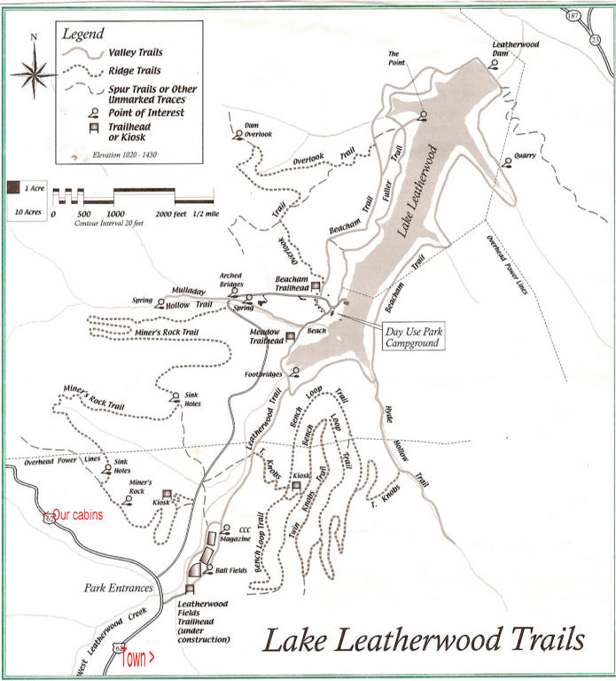

Trails
Bentonville - Trails and Pathways
The Bentonville Trail system consists of three looped trails within the parks, (Memorial Park, Lake Bella Vista, Park Springs Park), seven linear pedestrian pathways and bikeways along city streets, an all-terrain mountain bike trail, and on-road bicycle routes, creating a network of over 20 trail miles.
Razorback Greenway
A 36 mile regional greenway that kinks the cities of Fayetteville, Johnson, Springdale, Lowell, Rogers and Bentonville.
Slaughter Pen- over 20 miles of single track trails



Bella Vista - Single track trails (Opening Winter of 2016)

Devils Den
The paved multi-use trail is 5.5 miles long. The soft surface natural trail is 6.9 miles long.

Lake Leatherwood
